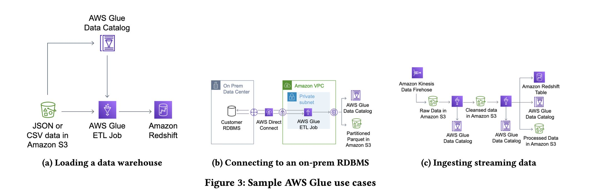

The Story of AWS Glue
Table of Contents
https://www.vldb.org/pvldb/vol16/p3557-saxena.pdf
1. abstract
过去我一直觉得aws glue就是一个catalog. 最早的时候是在使用athena的时候，看到这个aws glue catalog. 看来这个glue东西还是比较多的，它的定位就是一个完整的serverless ETL platform，包括下面4个方面：
- compute engine. apache spark + python. 里面还提供了一个dynamic frame. 来解决没有办法提供upfront schema的问题。
- hive compatible catalog.
- glue crawlers. 可以抓取s3 prefix来推测存在哪些表，以及table schema.
- glue studio. 可视化的方式来将etl jobs管理起来。
2. introduction
从推出时间上看从早到晚是emr/athena/glue，他们发现用户其实都大规模的ELT任务要做，所以才开发glue的。在glue catalog出来之前，需要使用emr来创建hive metastore. 为啥glue还是依赖于spark而不是athena呢？看来做etl这种任务还是需要有些脚本，sql可能还是不行。
下面是aws glue的架构图，不知道catalog这块用的是什么db. crawler这块还挺了不起的，可以直接根据s3 files推测出schema. 这种对于复杂schema特别有用，我看过一个业务线上一个struct列，几百的字段，人肉定义的确是有点难。
我记得在youtube上看过一个视频, aws glue v1.0的provision时间大约需要10分钟，2.0大约就是1分钟。1.0 provision时间的话可以让spark成为真正的micro batch处理系统。
Glue also offers a serverless interface for running Apache Spark jobs (Section 3.3). Users submit Spark jobs for execution, and the service does the rest. Glue was one of the earliest serverless analyt- ics services in production. Over the years, we have seen customers build on and use this serverless interface in ways we did not expect.
For example, customers use much smaller batch sizes when they do not have to worry about keeping clusters highly utilized. We were surprised to find that the median Glue Spark job runtime has dropped steadily and is now less than a few minutes. Also, while originally aimed for batch ETL, users routinely used Glue for inter- active debugging and experimentation. This motivated us to push the boundaries of our serverless compute backend to provide faster start times and dynamic auto scaling. Today, Glue jobs often start within a few seconds allowing for interactive execution. Glue also dynamically scales resources up and down during job execution to lower cost and provide better availability.
3. use cases
下面是3个常见的use cases
- 加载到专用的数据仓库
- RDBMS数据导出用于分析
- 实时导入数据（走s3估计是分钟级别）

关于这个reliability这点说的挺好的
- 稳定的性能：稳定的性能有时候比更好的性能更加重要，因为这样可以做资源规划。
- 执行可靠性：这个对于跑大数据/长时间任务非常重要。ETL通常都是大规模长时间运行的任务，通常测试时候数据规模小没有问题，生产环境数据量级差别就很大，时间也会更长，肯定不希望挂掉。
Reliable Data Processing. Operations like crawling and ETL are often performed on a schedule without manual intervention, so reliability and hands-off maintenance are critical. While customers care deeply about performance, reliability is essential, and they will often choose a system with good predictable performance over one that is faster on individual queries but less predictable overall.
Reliability is particularly important given scale and workload variability over time. While many ETL jobs are run incrementally on a schedule, in practice data sizes vary for many reasons. For example, customers often need to perform backfill operations where they process years of data at once, and they often develop and test their ETL processes with datasets that are significantly smaller than what they see in production. This can lead to scaling cliffs where performance degrades or jobs fail due to exhausting resources like memory or local disk.
4. glue stack
dynamic frames 自描述记录
To make transformations faster and more robust, we added Glue ETL libraries in the runtime to handle the unexpected changes and innumerable variations which are the characteristic of ETL work- loads. At the core of these libraries is a new base data structure, a DynamicFrame, which is a collection of self-describing records, DynamicRecords. As a result, DynamicFrames are more efficient for single-pass data transformation jobs that we often saw in ETL workloads. They do not require a schema upfront and can efficiently represent data sets like the GitHub Timeline [20] which contain widely varying record types from a few to hundreds of columns. The Glue ETL libraries also include new transformation operations for flattening and materializing DynamicFrames on-the-fly into column-oriented formats like Apache Parquet in a streaming fash- ion. Separately, we built vectorized readers for DynamicFrames in a native language (C++) which use hardware parallelism and colum- nar in-memory formats to speed up processing of raw formats like CSV and JSON.
serverless provision 优化
- ec2 warm pool
- spark 执行引擎和本地存储拆分
- spark scheduler 自动进行伸缩
Configuring and managing infrastructure was another major pain point for developers, so Glue sought to eliminate that alto- gether through a serverless interface for Apache Spark jobs. Glue’s serverless compute backend efficiently and securely provisions clus- ters for running those jobs. It includes a warmpool manager that maintains pre-provisioned EC2 virtual machines (VMs), a purpose- built Spark scheduler that integrates with the serverless compute to allocate resources to jobs, and mechanisms for security, network- ing, and isolation. To make serverless compute more efficient, we solved a few important challenges that we think will also translate to other data parallel systems. First, we decoupled Apache Spark executors from depending on local storage, e.g. for intermediate shuffles. Second, we improved job startup time from longer than 8 minutes on average down to a few seconds. Third, the decoupling and fast startup paved the way for a scheduler that dynamically scales resources up and down (auto scales) during the execution of individual job runs to achieve better performance, availability, and cost-efficiency for customers.
workflow / airflow 管理任务依赖和运行
Glue also includes an orchestration system, Glue Workflows, for composing multiple ETL jobs and running them reliably. It al- lows stitching together of multiple jobs, automatic scheduling, and convenient features for incremental processing. This includes job bookmarks, which help jobs pickup from where they left off in the previous run. So, developers need not worry about maintaining execution state between job runs. Finally, it provides “bounded exe- cution”, a feature that allow Glue Spark jobs to gracefully degrade when the input size overflows the amount of metadata that Spark can handle in a single machine.
4.1. dynamic frame
关于这个dynamic frame ，有几点可以看看
- 数据结构上其实是带上了类型的，但是这个类型其实是个ChoiceType. 可以包含多种可选类型。
- dynamic frame相比spark data frame功能有限，只能针对单个记录进行处理。将schema归一化之后，就可以toDF去做更加复杂的处理。
- relationalize 可以将dynamic frame数据结构打平，插入到标准的RDBMS里面去。
- 这个可以直接转成parquet/orc需要upfront schema的结构
Internally, DynamicFrames are stored as Spark RDDs of Dy- namicRecords, which are tree-based data structures containing both column information and data values. DynamicRecords are self- describing and support all of the standard data types found in Spark, including complex types such structs, maps, and arrays. The Glue ETL libraries include readers to create DynamicFrames from many common file formats, including Avro, CSV, JSON, ORC, and Apache Parquet, and data sources, including relational databases over JDBC and common NoSQL stores like Amazon DynamoDB and MongoDB.
DynamicFrames support a number of standard transformations such as selection and projection, and have support for UDFs in Python and Scala for filtering and transforming individual records. These operations can be performed record-at-a-time without ever computing a local schema. DynamicFrames also include a number of transformations specially designed for working with deeply nested data. For example, relationalize is a transformation that is designed to make it possible to prepare data for ingestion into a relational database without requiring any additional input from the user. It does two things. First, it flattens nested structs so that all fields are at the top-level, and second, it pivots arrays and extracts them into a separate table. This is applied recursively to support data with arbitrarily nested structs and arrays.
关于这个通用类型ChoiceType是通过schema inference出来的，大致长成下面这样：在出现schema分歧的时候，有个union选项，然后让用户自己去resolve choice type.
关于转成parque/orc结构，实现上比较讨巧：
- 先写一个row group.
- 在这个期间如果出现schema变化，那么修改schema.
- 完成之后这个schema就认为是file schema
- 如果下一个row group一样，那么继续写这个文件
- 否则就新开一个文件（注意这时候row group在buffer中）
与之相对应的办法就是先扫一遍data frame产生schema, 解析schema之后在开始写，这样其实多了一遍扫描的过程。数据量越大，glue这种方式就越有优势。 spark可以读取多个schema不同的parquet files, 但是需要打开schema merge 选项。感觉处理这种unstructured数据，看来还是spark这种有点script性质的系统比较好使。
In 2019, we introduced the Glue Parquet writer to eliminate the need for a schema up-front. The Glue Parquet writer incrementally builds the first row group in memory before setting the schema or flushing anything to disk. Every time a new field is discovered, the writer instantiates a new column and sets the definition and repetition levels appropriately. Once the amount of data stored in memory exceeds a configurable limit, 128 MB by default, the first row group is flushed and the schema for the file is fixed. Subsequent row groups and the file footer are written as usual.
If we find a new field after having written out the first row group, we flush the existing file and start a new file with the larger schema. In the worst case, where every record has a different schema, the writer would create a new file for every record, but in practice we have not found this to be a problem. The first 128 MB typically contain the majority of fields, and the impact to the average file size is minimal. Some systems consuming the resulting Parquet files do require different options when reading collections of files that have different schemas. For example, Spark requires that the mergeSchema parameter be set to true so that it reads the schema from all of the files instead of just one.
4.2. serverless provision
glue 1.0的方式比较粗糙，就是基于cluster来执行的。问题在于如果cluster可以从warmup pool里面拿到ec2，那么启动时间大约在1min(还需要启动spark cluster) 如果拿不到ec2的话，那么拿ec2部署下来就需要8-10min. 这种方式对micro batch地使用spark问题就比较大，响应时间太慢。
glue 2.0的方式是基于类似yarn resource manager去拿，spark worker一直都有。所以启动速度比较比较快了，warm start大约在5-10s，cols start在35s.我理解完全的cold start应该时间更长，但是文章说可以预测cluster size, 所以可以提早分配资源。
glue 3.0可以完全做到auto scaling. spark这种类似stage-by-stage的实现方式可能的确好在执行过程中做scaling. 挑战有：scaling中需要请确保状态不会丢失，还有就是避免频繁地scaling.
glue 4.0不知道还有什么新的feature.(但是glue 2.0/3.0/4.0的启动时间是完全一样的)
Our initial approach in Glue 1.0 was cluster-based and intended for mostly batch workloads. On job start, we choose from three options: (a) run the job on a previously allocated cluster for the user, (b) allocate from a service-wide warmpool of “T-shirt”-sized clusters, (c) provision a new cluster from EC2. Jobs only start after the entire cluster is allocated. The scheduler retires allocated clusters after a fixed idle period to reduce costs, and uses rule-based heuristics to provision more capacity in the warmpool to fill demand. Figure 8(a) shows the distribution of job start times for Glue 1.0 [13]. When clusters are already provisioned (warm start - (a) and (b)), we see start latencies less than one minute. When a new cluster needs to be provisioned, however, the latencies jump to 8-10 minutes and are highly variable. In these cold start cases, clusters are larger and must wait until the last machine is provisioned before starting.
To speedup start times, we introduced a new resource manager and lighter weight Spark application stack with Glue 2.0 in 2020. Glue 2.0 schedules a job on a dynamically-sized cluster, and the job starts as soon as the first instance is ready. We modified Spark’s scheduler [27] to run executors on workers from our resource manager, instead of a cluster-based one like YARN. When needed, our resource manager allocates workers from (a) a service-wide warmpool of instances with Spark initialized or (b) provisions new instances from EC2. The warmpool uses ML models to forecast how many EC2 instances are needed for each region and availability zone based on incoming demand as well as intra- and inter-day variability. Figure 8(b) shows that start times are mostly under 10 seconds and often under a couple seconds (Glue 2.0 to 4.0 all have the same job start times). Cold start times are shorter, rarer, and less variable because the warmpool often fulfills demand, and jobs need not wait for an entire cluster.
With faster startup and a dynamic scheduler, we had the op- portunity to further optimize costs for customers, especially for streaming workloads. Glue 3.0 introduced auto scaling which dy- namically tunes cluster size during a job. To do so, we solved two key challenges for auto scaling. First, while the Glue 2.0 scheduler allows for scaling up, we needed a way to scale down during peri- ods of inactivity without losing intermediate state. To do so, Glue extends Spark’s shuffle tracking algorithm [29] to avoid retiring workers with intermediate shuffle data that need downstream pro- cessing. Second, since resizing happens more frequently in intra-job scaling, we dampen resizing based on inactivity within and across jobs to avoid high churn on global compute resources. With auto scaling, customers get a truly serverless experience.
4.3. shuffle on s3
这个前提是s3已经完全可以做到local storage的吞吐了，并且可以应对disk failure以及data skew对local storage压力。这个是plugin机制实现的，还可以对接其他cloud storage.
Before 2021, Glue customers only had two options to address out-of-disk failures: scale out and provision more hosts or re-partition their datasets. While this helps in some cases, it still does not guarantee reliable execution, since data skew can lead to scenarios where disk space is exhausted on just a few workers. Even when adding hosts does help, it costs customers more, as they pay for additional compute just to get more disk space.
In 2021, we introduced the cloud shuffle storage plugin that instead materializes to Amazon S3, thereby completely decoupling storage and compute for Apache Spark (see Figure 9). Amazon S3 offers highly available, low-cost, and elastic storage. On the other hand, existing approaches such as Cosco [14], Zeus [26] and Magnet [28] require managing an additional storage fleet for shuffle. This plugin required us to extend components in Spark such as the block manager and shuffle reader and writers. We also added support for multi-part uploads and jitter-reducing strategies for optimizing I/O to Amazon S3.
In 2022, we also extended the plugin to operate for other cloud storage provider implementations with Glue versions 3.0 and 4.0, and released the software binaries for customers and the community to use in any Spark environment [22].
4.4. workflow & monitoring
glue job bookmark可以标记那些数据已经被处理了，这样可以处理增量数据。另外对于初始化导入的时候，bookmark也很有用，可以将s3 prefix进行拆分比如每次只处理1w个文件，这样bookmark就可以标记那些文件已经被处理了。
To make it easy for customers to process new data as it arrives, we built a new construct in the Glue ETL library called Glue Job Bookmarks. A job bookmark is the state associated with an exe- cution of a Glue job (job run) that can be used to track the data it processed. When job bookmarks are enabled, jobs pickup from where they left off. Bookmark state is committed on job comple- tion and is used in subsequent job runs to skip already processed data. Glue job bookmarks simplify incremental processing of Glue catalog tables, S3 bucket locations with CSV, JSON, Parquet, ORC, Avro file formats, and JDBC sources such as relational databases (MySQL, SQLServer, Aurora) with the use of one or more columns as bookmark keys.
Customers also face challenges with large initial loads. We com- monly see customers with millions of files in an S3 prefix, and processing these all at once can cause job failures due to memory limits in individual Spark workers. To address this problem, we in- troduced the ability to bound the execution of a job run by limiting the number of files or dataset size processed per job. Customers can then execute the job multiple times to complete the initial load. While this is a simple approach, it works surprisingly well in prac- tice and helps customers reliably complete large migrations without having to worry about complex performance tuning.
glue job insights 和 deequ framework 监控pipeline和数据质量。
In 2021, we also built Glue job insights [17] to further simplify diagnosis or root cause analysis of errors for customers. With job insights, customers can now quickly retrieve meaningful error messages, line number of their application code which was last executed before the failure, and rule-based recommended action to fix the issue. With these mechanisms, customers can not only quickly alert on their pipeline failures, but also trace the issue back to their application logic and identify resulting data inconsistencies.
In 2022, we released tools to help customers evaluate and moni- tor quality of both in-transit and at-rest data. Built on top of the open-source DeeQu framework [19], our solution allows customers to express their data quality rules against dimensions such as data accuracy, freshness, and integrity. Customers can select from rec- ommended data quality rules or implement their own rules using a Data Quality Definition Language. They can then run data quality checks which evaluate data quality using these rules and compute a quality score. Customers can monitor the score to further take action or decide if the dataset is fit for use, and they can publish these metrics to Amazon CloudWatch.
5. glue catalog
使用hms存在的问题：
- 需要自己进行管理，比如启动EMR来启动一个hms.
- 底层使用RDBMS系统，这个同样需要进行管理
- 扩展性能因为架构原因所以不是特别好。
可以认为glue catalog是一个分布式的HMS. 但是
- 提供了更加简单的CRUD API和权限管理
- 更加灵活的对象模型，可以作为更加通用的catalog使用
- column type 可以是任意值
- connection objects 概念，这样数据源可以是比如其他aws service等
The open source community pioneered a solution in this space with the Hive metastore, which has become a de-facto standard in the Hadoop ecosystem for metadata management [24]. It provides a common interface for accessing metadata about databases, tables, and partitions, and it is widely supported by open-source query engines such as Apache Hive, Trino, and Apache Spark. While the Hive metastore is widely deployed and battle-tested, it has some limitations that make it insufficient for managing large data lakes. First, it becomes yet another system that a data lake administrator has to manage. The standard implementation of the Hive Metastore uses a relational database, and customers are responsible for provi- sioning, scaling, and patching the metastore. Performance is also a challenge, and users often have to shard large Hive metastores, which introduces an extra layer of complexity.
另外glue catalog对partition value做了index. 这样使用某些partition谓词的话，可以更快地返回partitions.
The Glue Data Catalog is built on-top of low latency and highly scalable storage. Its storage implementation also offers predictable performance and high availability for hundreds of thousands of cus- tomers monthly. While standard storage optimizations worked well for problems such as skewed data and atomic table updates, as cus- tomers started working with larger-and-larger datasets, partition pruning became another bottleneck. As described in section 2.2.3, big data query engines make heavy use of partitioning to improve query performance by skipping files. By default, query engines enumerate all partitions for a table and filter them client-side based on the query predicate. This is reasonable when the number of par- titions is small, but partition enumeration can become a significant bottleneck when querying tables with millions of partitions.
To address this, we added support for partition indexes in 2020. Customers can create an index on one or more partition attributes, and they will be stored separately with support for efficient range queries. This means that query engines can push partition predi- cates all the way down to the Glue Data Catalog and only retrieve the matching partitions. Figure 12 shows the benefits of a partition index on a simple query that performs a count distinct over a single partition. When the table has only 50,000 partitions, the index does not make significant performance difference, but with one million partitions the query is 8.6 times faster with the partition index.
glue catalog 除了hms代替之外，还可以提供其他服务的metadata管理，比如schema registry. 这个confluent还单独搞了服务。
While it started as a replacement for the Hive Metastore, the suc- cess of the AWS Glue Data Catalog shows the value of having a centralized, managed, and easily accessible repository for metadata. Today, the Glue Data Catalog serves as the main metadata store for data integration with Glue ETL jobs, query engines such as Amazon Athena and Amazon Redshift, and is widely used from Apache Spark and Apache Hive on Amazon EMR. Beyond query engines, the Glue Data Catalog is becoming a central integration point for services that need to interact with customer datasets. For example, AWS Lake Formation allows customers to enforce fine- grained access control policies on entities in their data catalogs, and the AWS Glue Schema Registry allows customers to specify schemas separately from tables so that they can be reused by ana- lytics applications and streaming services like Amazon Kinesis.
6. glue crawler
通过分析S3上的文件，来推测table schema. 这个算法稍微有点复杂，大致就是按照分析partition下面的schema, 看看各个partition之间的schema是否相近：如果相近的话那么就可以合并，否则就认为是分开的table.
AWS Glue crawlers help address these challenges by scanning data in S3 and automatically populating tables and partitions in the Data Catalog without requiring manual configuration. Customers simply specify a set of S3 prefixes and a destination database in the Data Catalog, and Glue will crawl the files under those prefixes, identify their types and schemas, and create or update the appro- priate tables and partitions in the Data Catalog. Crawlers can be used to identify schema changes in rapidly evolving datasets or to register new partitions after an hourly ingestion. Crawlers have been running in production since the launch of Glue and currently process tens of billions of files per day.
每个S3文件只是读取前面MB数据，然后根据classifier判断文件格式，根据不同的文件格式有不同的逻辑来做schema inference.
In order to limit the amount of data that we must scan, each crawler looks at only the first megabyte of each file and uses the same algorithm described in Section 3.2.1 to infer the schema. While this means that it is possible that the crawler might infer only a subset of the actual schema, for example missing attributes that are not present in the first megabyte, we find this to be rare in practice, and systems like Glue ETL have additional logic for automatic schema inference to handle fields not present in the Data Catalog.
然后这种inferenced schema还可以进行增量更新，上次完成的crawler的信息可以存储下来。
Glue crawlers allow customers to incrementally crawl or recrawl only the new S3 partitions that were added since the last crawl run. Using an S3 events based crawler, customers can reduce crawl times significantly as crawls are now targeted to changed folders. These options save on both time and cost for updating the Glue Data Catalog.